# Setup (as in every chapter): install packages that are not pre-installed in
# Google Colab or Anaconda, then import the standard data stack.
import importlib.util, subprocess, sys
for pkg in ["ucimlrepo"]:
if importlib.util.find_spec(pkg) is None: # package not found?
subprocess.run([sys.executable, "-m", "pip", "install", "-q", pkg], check=True)
import numpy as np
import pandas as pd
import matplotlib.pyplot as plt
import seaborn as sns
sns.set_theme(style="whitegrid") # common style for all plots2 Exploratory Data Analysis and Data Quality
Exploratory data analysis (EDA) is the systematic first look at a dataset before any model is built. Its purpose is twofold: to understand the structure of the data – distributions, relationships, patterns over time – and to find problems – gaps, outliers, implausible values, inconsistencies. In engineering, many failed data science projects can be traced back to data problems that a careful EDA would have revealed.
The statistician John Tukey, who coined the term, put it this way: EDA is detective work. We look for clues without knowing in advance what we will find. The tools are simple – summary statistics and plots – but using them well requires domain knowledge.
In terms of the CRISP-DM process from Chapter 1, EDA is the core of phase 2, data understanding. The original CRISP-DM model names four tasks for this phase, and this chapter follows them: collect the data (Section 2.1), describe them (Section 2.2), explore them (Section 2.3) and verify their quality (Section 2.4 and Section 2.5). The findings determine what happens in phase 3, data preparation – which outliers to keep, how to fill gaps, which sensors to drop. And they often lead back to phase 1: can the question be answered with these data at all? The scenario of this chapter is exactly such a decision.
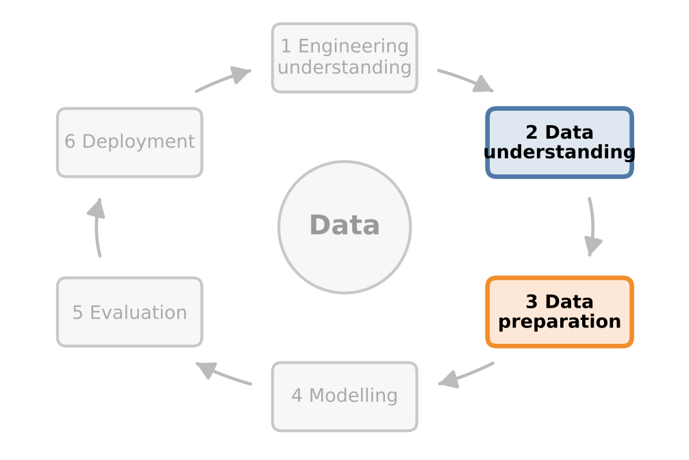
Scenario: go or no-go for a failure prediction project
A semiconductor fab wants to predict failed production runs from its process data. A project budget for one year has been requested, and the fab manager asks you for a quick assessment before signing: “We have almost 600 sensors and more than 1,500 runs – that must be enough, right?” You have one week to look at the data.
Your decision: Recommend starting the project now, or first investing in better data?
Before reading on: write down your own decision and how confident you are. You will compare it with the result at the end of the chapter.
Learning goals. After this chapter you can
- read a raw sensor file correctly (separator, missing value code, time stamps, time zone),
- describe distributions numerically (location, spread, shape) and visually (histogram, box plot),
- explore a sensor dataset over time with rolling means, resampling and heatmaps,
- detect outliers with the IQR rule and robust z-scores and decide how to treat them,
- characterise missing data (MCAR, MAR, MNAR) and choose an appropriate treatment,
- judge whether a dataset is fit for the intended analysis.
Course goal. This chapter contributes to step 2 of the course goals: check and prepare the data.
Datasets in this chapter
- Appliances Energy Prediction (UCI) – original publication: L. M. Candanedo, V. Feldheim, D. Deramaix, Data driven prediction models of energy use of appliances in a low-energy house, Energy and Buildings 140 (2017), 81–97, doi:10.1016/j.enbuild.2017.01.083
- SECOM (UCI) – M. McCann, A. Johnston, SECOM [dataset], UCI Machine Learning Repository (2008), doi:10.24432/C54305; there is no accompanying publication
- DWD Climate Data Center – hourly station data – in Exercise 1
2.1 Reading raw data
Before data can be described, they have to be read – and read correctly. Real measurement data rarely come as a ready-made table: they arrive as text files with their own separators, codes for missing values and time formats. This section reads a sensor dataset with an unusual time format; Exercise 1 reads a raw file from a weather service, with a code for missing values and time stamps in UTC. First, the usual setup:
2.1.1 Live coding: the energy data of a house
Our first dataset accompanies us through the next three sections. It was recorded in a low-energy house in Belgium. A wireless sensor network measured temperature and humidity at nine places – in eight rooms and outside the building – as 10-minute averages for about 4.5 months; the electricity consumption of the appliances was logged by an energy meter, and outdoor weather was taken from a nearby airport. Key columns:
| Column | Meaning | Unit |
|---|---|---|
Appliances |
energy use of appliances in the 10-minute interval | Wh |
lights |
energy use of light fixtures | Wh |
T1 … T9, RH_1 … RH_9 |
temperature and relative humidity in the rooms; T6, RH_6 outside the building (north side) |
°C, % |
T_out, RH_out, Windspeed, … |
outdoor weather | various |
rv1, rv2 |
random numbers, added deliberately by the authors as a test | – |
The columns rv1 and rv2 were not measured: the authors added random numbers on purpose, to test their models. The idea: a variable that a model rates no better than random numbers is probably useless. A careful analysis should therefore find that rv1 and rv2 carry no information about the energy use (Exercise 3).
from ucimlrepo import fetch_ucirepo
appl = fetch_ucirepo(id=374) # Appliances Energy Prediction (UCI)
energy = appl.data.original.copy() # whole table incl. time, as a copy
raw = energy["date"].astype(str).str.strip() # look at the raw time stamps first ...
print("Raw time stamps:", raw.head(3).tolist()) # first three, as a plain list
# ... then parse them with the matching format. In the version served by UCI, date and
# time are glued together without a blank: "2016-01-1117:00:00" = 11 January 2016, 17:00.
# If the output above shows a blank between date and time, use "%Y-%m-%d %H:%M:%S".
energy["date"] = pd.to_datetime(raw, format="%Y-%m-%d%H:%M:%S")
# Two steps in one line ("method chaining"): set_index() returns a new table,
# and sort_index() is applied directly to it (more in the Python reference, appendix).
energy = energy.set_index("date").sort_index() # time as index, in chronological order
# rows and columns, first and last time stamp:
print(energy.shape, energy.index.min(), "to", energy.index.max())
# isna() gives True where a value is missing; True counts as 1, so sum() counts
# the missing values per column, and the second sum() adds up all columns:
print("Missing values:", energy.isna().sum().sum())
# Regular grid? A complete 10-minute grid from the first to the last time stamp has this
# many time stamps; if the table had fewer rows, some time steps would be missing.
full_grid = pd.date_range(energy.index.min(), energy.index.max(), freq="10min")
print("Rows:", len(energy), "| complete 10-min grid:", len(full_grid), "time stamps")Raw time stamps: ['2016-01-1117:00:00', '2016-01-1117:10:00', '2016-01-1117:20:00']
(19735, 28) 2016-01-11 17:00:00 to 2016-05-27 18:00:00
Missing values: 0
Rows: 19735 | complete 10-min grid: 19735 time stamps
Pitfall: letting the software guess date formats
Is 03/04/2016 the 3rd of April or the 4th of March? If you let pandas guess, it may parse some time stamps one way and others the other way – or fail on a single unusual entry. Always look at the raw strings and give the format explicitly. If a column mixes several formats, as in the SECOM data below, state at least the order of day and month (dayfirst=True) and check the range of the result. An explicit format has a second advantage: if it does not fit even a single time stamp, pandas stops with an error message that shows this time stamp – much better than a date that is silently read the wrong way.
The time stamps of this dataset are a real-world surprise: in the version served by the UCI repository, date and time are glued together without a blank. pandas cannot guess this format – but the explicit format %Y-%m-%d%H:%M:%S reads it without problems.
Checking that the time index is regular is a quick but important test. Gaps in the time grid are “hidden” missing values: df.isna() does not see them because the rows do not exist at all.
Good practice: downloading and reading raw files
- Keep the raw file untouched. Never correct values by hand in the file. Every step from the raw file to the clean table is code – so anyone can repeat it, including you next semester.
- Download once, keep a copy – e.g. with the helper
download()in the solution to Exercise 1. Check that the download succeeded (raise_for_status()); otherwise an error page may be stored as “data”. - Note source and version: URL, download date, version. Many sources are updated: the DWD weather data of Exercise 1 cover roughly the last 500 days and change daily, so the same code can give slightly different results next month.
- Read the documentation first: separator, decimal mark, missing value code, units, time format and time zone. Weather services usually deliver UTC, production data are often in local time with daylight saving time – a common source of one-hour shifts.
- State everything explicitly instead of letting pandas guess:
sep=";",decimal=","(numbers with a decimal comma, common in German files),na_values=[-999],format=for time stamps. - Check right after reading:
df.head(),df.info(),df.describe(). A numeric column of typestr(objectin pandas versions before 3.0) contains at least one text entry; a table with only one column or unexpectedly many missing values points to a wrong separator or code.
Engineering practice: data from databases
In companies, engineering data often come from databases rather than files – process data from a historian, quality and order data from a manufacturing execution system. They are read with SQL: a few commands such as SELECT, WHERE, GROUP BY and JOIN cover most needs, and pd.read_sql loads the result directly into pandas. The questions of this section remain the same: units, missing values (in SQL: NULL) and time zones. Appendix C gives a short introduction.
2.2 Describing distributions
Which description fits a single variable depends on its type (Chapter 1):
- A categorical variable is described by the frequencies of its categories – counts or shares – and shown in a bar chart. The most frequent category is called the mode. For an ordinal variable, the median is meaningful as well (quality class M lies in the middle), the mean is not.
- A numeric variable is described by its location (where are the values?), its spread (how much do they vary?) and its shape (symmetric, skewed, multimodal?).
Engineering data are mostly numeric, and so is the rest of this section. A categorical example – the pass/fail label of this chapter’s scenario – follows in Section 2.5.
Definition: Location and spread
For numeric observations \(x_1, \dots, x_n\):
- Mean \(\bar x = \frac{1}{n}\sum_i x_i\) and median (the middle value of the sorted data).
- Sample standard deviation \(s = \sqrt{\frac{1}{n-1}\sum_i (x_i - \bar x)^2}\).
- Quantiles: the \(p\)-quantile is the value below which a share \(p\) of the sorted data lies. The median is the 50 % quantile; the quartiles \(Q_1\) and \(Q_3\) are the 25 % and 75 % quantiles. Together with the median, they divide the data into four parts with 25 % of the values each. The interquartile range \(\text{IQR} = Q_3 - Q_1\) is the width of the middle half of the data.
- Median absolute deviation: with the median \(\tilde x = \operatorname{median}(x_1, \dots, x_n)\), \[\text{MAD} = \operatorname{median}\big(|x_1 - \tilde x|, \dots, |x_n - \tilde x|\big),\] i.e. the median of the absolute deviations from the median.
Mean and standard deviation are sensitive to extreme values: a single wrong reading of \(10^6\) can dominate both. Median, IQR and MAD are robust: they barely change if a few values are wrong. For engineering data, where sensor glitches are common, it pays to look at both and compare them.
Reading a histogram. A histogram divides the range of values into intervals of equal width (bins) and shows how many values fall into each; tall bars mark frequent values (Figure 2.1, top). The number of bins changes the picture: too few hide details, too many make it noisy – trying two or three settings is worthwhile.
Reading a box plot. Figure 2.1 shows how the quartiles divide a skewed dataset and how a box plot summarises it. The box spans the middle half of the data from \(Q_1\) to \(Q_3\) – its width is the IQR – and the line inside marks the median. The whiskers reach to the smallest and largest values that lie no more than 1.5 IQR outside the box; values beyond are drawn individually as candidates for outliers (Section 2.4). The skewness is visible at a glance: the right part of the box and the right whisker are longer than the left ones. A box plot hides details of the shape – two peaks, for example, are invisible – but it is compact and ideal for comparing several groups side by side. In pandas, describe() reports the quartiles as 25%, 50% and 75%.
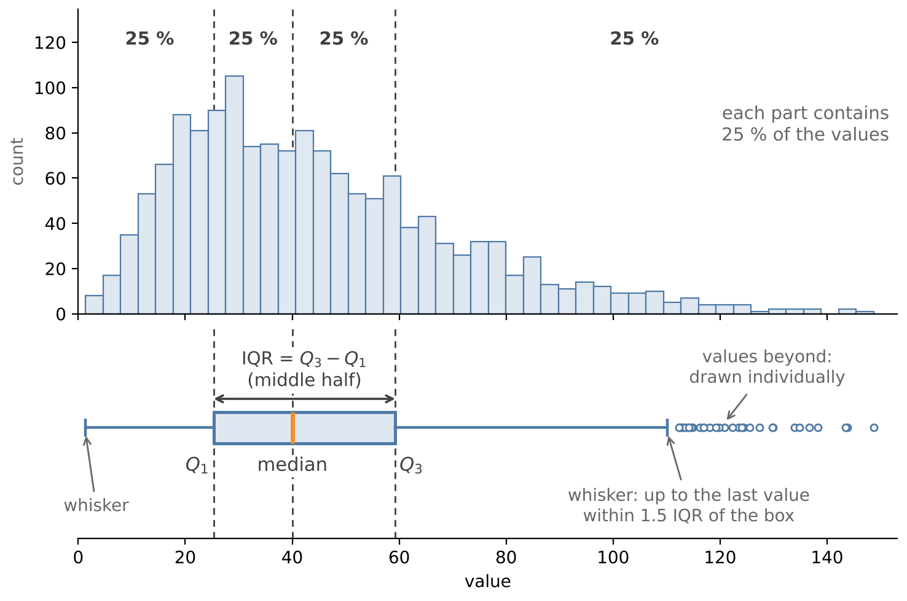
Which plot for which question?
- Frequencies of a categorical variable: bar chart – sorted by frequency, or in the natural order of an ordinal variable.
- Distribution of a numeric variable: histogram (shape) or box plot (compact, good for comparing groups).
- Relationship between two variables: scatter plot; with many points use transparency or a random sample (Chapter 1).
- Development over time: line plot, possibly with a rolling mean (Section 2.3).
- Patterns over two time scales (hour of day × weekday): heatmap.
- Many variables at once: correlation heatmap, pair plot of a subset.
2.2.1 Live coding: appliance energy use
The target variable of the energy dataset is the energy use of the appliances. Histogram and box plot show its distribution:
Code
fig, axes = plt.subplots(1, 2, figsize=(12, 4)) # two plots side by side
sns.histplot(energy["Appliances"], bins=60, ax=axes[0]) # histogram with 60 bins (left)
axes[0].set(xlabel="Appliances (Wh per 10 min)")
sns.boxplot(x=energy["Appliances"], ax=axes[1]) # box plot (right); x= draws it horizontally
axes[1].set(xlabel="Appliances (Wh per 10 min)")
plt.tight_layout(); plt.show() # tight_layout: avoid overlapping labels
energy["Appliances"].describe().round(1) # the same distribution in numbers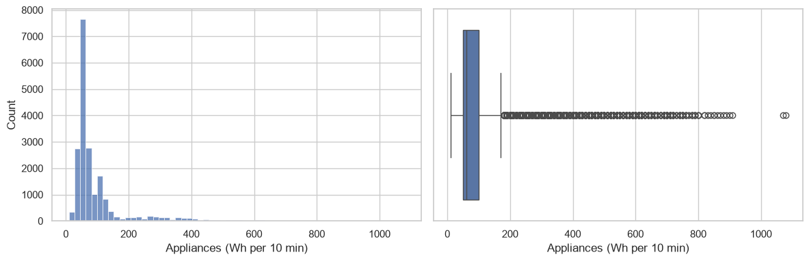
count 19735.0
mean 97.7
std 102.5
min 10.0
25% 50.0
50% 60.0
75% 100.0
max 1080.0
Name: Appliances, dtype: float64Discussion. The distribution is strongly right-skewed: most of the time the consumption is low (base load from fridge, standby), but occasionally it rises sharply (cooking, washing machine). Consequently, the mean is clearly larger than the median, and the box plot flags many points as “outliers” (Section 2.4). Here these are not measurement errors but real usage events – deleting them would remove the most interesting part of the data.
For skewed, positive quantities a log transformation often helps: it makes the distribution more symmetric and turns multiplicative effects into additive ones.
2.3 Patterns over time
Engineering data are mostly time series. Besides the distribution of each variable, its development over time matters: trends, cycles, sudden steps. Two tools help to see them in noisy data. A rolling mean (moving average) replaces every value by the mean of a window of neighbouring values – below, the preceding 24 hours. Short peaks are averaged out, the level remains, and every time stamp keeps its own value. At the start of the series, fewer than 24 hours are available; pandas then averages over the values it has, so the first hours are smoothed less. Resampling instead combines all values of an interval into one value, e.g. from 10 minutes to hours. Figure 2.2 shows the difference on a small example.
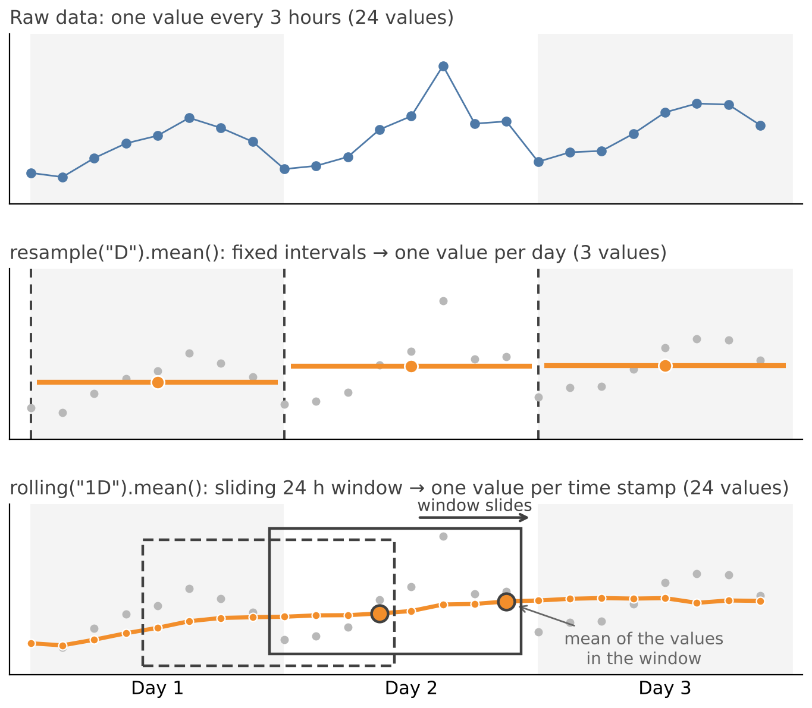
resample forms fixed intervals and returns one value per interval; rolling moves a window along the time axis and returns one value per time stamp.
resample or rolling?
Rule of thumb: one value per period → resample; same time stamps, but smoother → rolling.
resamplewhen the question needs a coarser time grid: daily energy, monthly maximum, hourly load. It is also the tool to bring series with different time steps onto a common grid – e.g. hourly electricity load and hourly weather data as daily values (Chapter 11) – and to reduce large datasets. Choose the summary per variable:sumfor energies and counts,meanfor temperatures (Exercise 2).rollingwhen every time stamp should be kept, but short fluctuations hide the level or trend: smoothing a plot, or monitoring – “has the mean of the last hour exceeded the limit?”. Because the window only looks back, the rolling mean at each time uses only past values and can be computed in real time; rolling means of the past are also common inputs for forecasting models.
2.3.1 Live coding: daily and weekly profiles
First the whole measurement period: the 10-minute values of the appliance energy use with a 24-hour rolling mean, and the indoor and outdoor temperature as hourly means – temperatures change slowly, so hourly values keep the daily cycle and make the plot lighter:
Code
fig, axes = plt.subplots(2, 1, figsize=(10, 6), sharex=True) # two plots, one time axis
# top: 10-minute values (thin, transparent line) and their 24-hour rolling mean
energy["Appliances"].plot(ax=axes[0], lw=0.3, alpha=0.6, label="10 min")
# rolling("1D") defines a window of one day that slides along the time axis; mean() then
# computes the mean of each window - one smoothed value per time stamp. Same pattern as
# resample(): first define the windows, then summarise them.
smooth = energy["Appliances"].rolling("1D").mean()
smooth.plot(ax=axes[0], color="k", label="24 h rolling mean")
axes[0].set(ylabel="Appliances (Wh)"); axes[0].legend()
# bottom: indoor and outdoor temperature, resampled from 10 minutes to hourly means
energy[["T1", "T_out"]].resample("h").mean().plot(ax=axes[1])
axes[1].set(ylabel="Temperature (°C)")
plt.show()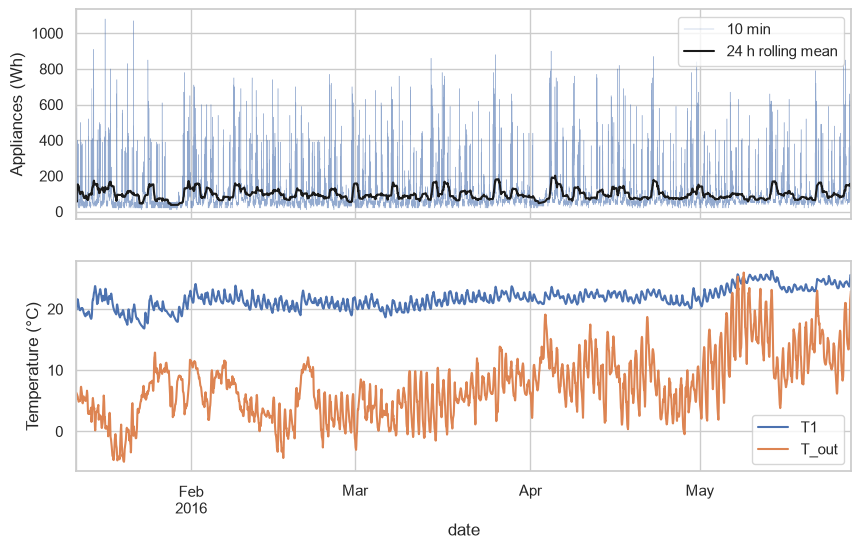
The rolling mean reveals the level of consumption over time. Indoor temperature T1 is much more stable than the outdoor temperature – as expected for a well-insulated building.
Consumption depends on human behaviour, so we expect patterns over the hour of the day and the day of the week. This needs a different kind of grouping than resample: not consecutive days, but all Mondays together and all values at 8 a.m. together – no matter in which week. This is what groupby() does (Getting Started with pandas), here with two keys at once: hour and weekday. pivot_table combines this grouping with arranging the result as a table – one row per hour, one column per weekday, one mean per cell. A heatmap then shows the table:
Code
# pivot_table groups by two keys and arranges the means as a table:
# 24 hours (rows) x 7 weekdays (columns) = 168 groups, one mean consumption each.
hour = energy.index.hour.rename("hour") # 0, ..., 23
weekday = energy.index.dayofweek.rename("weekday") # 0 = Monday, ..., 6 = Sunday
profile = energy.pivot_table(values="Appliances", # mean consumption ...
index=hour, # ... with one row per hour
columns=weekday, # ... and one column per weekday
aggfunc="mean")
sns.heatmap(profile, cmap="viridis", # colour = mean consumption
cbar_kws={"label": "mean Appliances (Wh)"}) # label of the colour bar
plt.xlabel("Day of week (0 = Monday)"); plt.ylabel("Hour of day")
plt.show()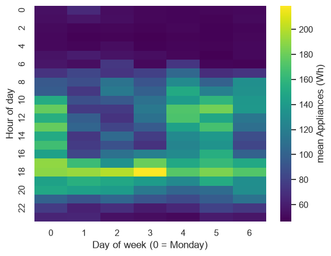
Discussion. Low consumption at night and a peak in the early evening (about 17–19 h) on every day – a typical residential profile. The heatmap also shows how the two time scales work together: between about 10 and 16 h, consumption is high on Monday, Friday and Saturday, lower on Sunday and lowest from Tuesday to Thursday – apparently the house is empty on these days. The effect of the hour of day thus depends on the weekday, an interaction. A model that simply adds a daily profile and a weekday effect would miss it. Be careful, though: the dataset covers only 4.5 months, so each cell is the mean of only about 20 days, and a single day with unusual use – a laundry day, a party – can shape a cell. Patterns that extend over several hours and days are more trustworthy than a single bright cell. Hour of day and weekday – and their interaction – are strong features for forecasting (Chapter 11).
2.4 Data quality and outliers
Measured data pass through a long chain – sensor, signal conditioning, A/D conversion, data logger, database, export – and every link can introduce errors. Typical problems:
| Problem | Typical cause | How to detect |
|---|---|---|
| Missing values | sensor dropout, logging gap, value not measured for every product | df.isna(), gaps in the time index (Section 2.5) |
| Outliers | real rare event or measurement error | box plot, IQR rule, robust z-score |
| Implausible values | sensor fault, wrong scaling | physical limits (e.g. humidity > 100 %) |
| Frozen values | sensor stuck, communication lost | long runs of identical values |
| Coarse resolution | A/D converter or logger rounds values (e.g. to 0.1 K) | many identical values, gaps in the histogram |
| Wrong units / time stamps | °C vs. K, local time vs. UTC | domain knowledge, comparison of sources (Section 2.1) |
| Drift and offsets | sensor ageing, recalibration | trends, steps in the time series |
Two of these problems need more than a quick check: outliers, treated in this section, and missing values (Section 2.5).
Definition: Outlier rules
- IQR rule (Tukey): a value is flagged if it lies below \(Q_1 - 1.5\,\text{IQR}\) or above \(Q_3 + 1.5\,\text{IQR}\). These limits determine the whiskers of the box plot (Figure 2.1): values beyond them are drawn individually.
- Robust z-score: \(z_i = \dfrac{x_i - \tilde x}{1.4826 \cdot \text{MAD}}\), flag if \(|z_i| > 3.5\), where \(\tilde x\) is the median. The factor 1.4826 makes MAD comparable to the standard deviation for normally distributed data.
For normally distributed data, the two rules set their limits at different distances from the centre (Figure 2.3): the IQR rule at about 2.7 standard deviations, the robust z-score at 3.5. Even data in which every value is valid therefore contain “outliers” – 0.7 % with the IQR rule, 0.05 % with the robust z-score. Flagged does not mean wrong.
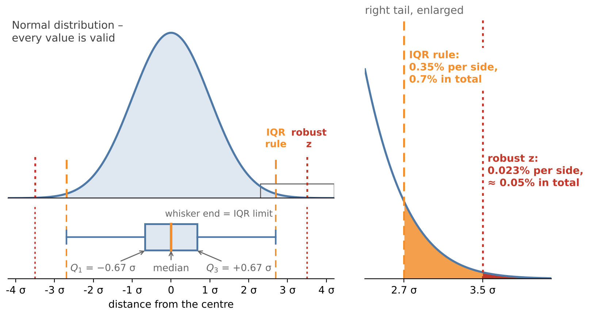
Extension: where does the factor 1.4826 come from?
The robust z-score should measure distances in the same unit as the ordinary z-score – the standard deviation \(\sigma\) – but without being disturbed by outliers. The MAD is robust, but for normally distributed data it is smaller than \(\sigma\): half of all values lie within \(\pm 0.6745\,\sigma\) of the median (these are the quartiles, Figure 2.1), so the median of the absolute deviations is \(\text{MAD} = 0.6745\,\sigma\). Dividing by 0.6745, i.e. multiplying by \(1/0.6745 = 1.4826\), turns the MAD into an estimate of \(\sigma\): \(\sigma \approx 1.4826 \cdot \text{MAD}\). For normal data, \(|z| > 3.5\) therefore means “more than 3.5 standard deviations from the median”.
The ordinary z-score \((x_i - \bar x)/s\) is less suitable for outlier detection: the outliers themselves inflate \(\bar x\) and \(s\) and can hide each other (masking).
Pitfall: deleting “outliers” automatically
An outlier is a value that is unusual with respect to a model of the data – it is not automatically an error. The rare high current peaks of a motor may be exactly the events that announce a failure. Never delete data before you understand why they are extreme, and always document what you removed.
2.4.1 Live coding: outliers in the energy data
We apply both rules to the appliance energy use and to three variables with roughly symmetric distributions:
def iqr_outliers(x, k=1.5):
"""IQR rule: True for values more than k * IQR below Q1 or above Q3."""
q1, q3 = x.quantile([0.25, 0.75]) # first and third quartile
iqr = q3 - q1 # interquartile range
return (x < q1 - k * iqr) | (x > q3 + k * iqr)
def robust_z_outliers(x, limit=3.5):
"""Robust z-score rule: True for values with |z| > limit."""
mad = (x - x.median()).abs().median() # median absolute deviation
z = (x - x.median()) / (1.4826 * mad) # robust z-score of every value
return z.abs() > limit
for col in ["Appliances", "T1", "T_out", "RH_1"]:
x = energy[col]
share_iqr = iqr_outliers(x).mean() # mean of True/False = share of flagged values
share_z = robust_z_outliers(x).mean()
print(f"{col:11s} IQR rule: {share_iqr:6.1%} |robust z| > 3.5: {share_z:6.1%}")Appliances IQR rule: 10.8% |robust z| > 3.5: 11.2%
T1 IQR rule: 2.6% |robust z| > 3.5: 0.2%
T_out IQR rule: 2.2% |robust z| > 3.5: 0.3%
RH_1 IQR rule: 0.7% |robust z| > 3.5: 0.2%Discussion. Both rules flag about 11 % of Appliances, but for the temperatures the IQR rule flags far more than the robust z-score – for T1, 2.6 % instead of 0.2 %. Its limits lie closer to the centre (Figure 2.3), and real data with heavier tails than the normal distribution – like the room temperature – raise both shares, the IQR rule’s more. How many values count as “outliers” is therefore partly a choice of rule and threshold.
The decisive question is what the flagged values are. When do the flagged values of Appliances occur?
Code
flag = iqr_outliers(energy["Appliances"]) # True for flagged values
share = flag.groupby(energy.index.hour).mean() # share of flagged values per hour of day
ax = share.plot.bar(rot=0, xlabel="Hour of day", ylabel="Share flagged by IQR rule")
plt.show()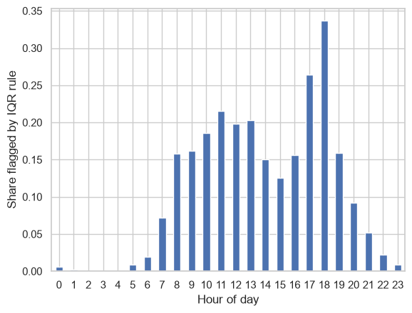
Between midnight and 6:00, almost no value is flagged; during the day, about 15–20 % of the values are, and at 18:00 a third of them – the same pattern as in the heatmap (Section 2.3). They are cooking, washing, ironing: real usage, not measurement errors. Decision: keep them. Deleting them would remove exactly the events a forecast of the energy use has to predict. The skewness that makes them look extreme is better handled by a log transformation (Exercise 4).
Two general hints. For strongly skewed data, transform first and then apply a rule. For multimodal data – e.g. a machine with an idle and a full-load mode – apply the rule separately for each mode (groupby): a global rule judges every value against a mixture of modes, so a faulty value in the idle mode can look perfectly normal. In the end, the flags tell us where to look; the engineer decides what the values mean.
Engineering practice: removing values that are errors
If a value is clearly an error – physically impossible, or caused by a known sensor fault – remove it in code, never in the raw file (Section 2.1), and document what you removed:
bad = (df["RH_1"] < 0) | (df["RH_1"] > 100) # physically impossible values
print(bad.sum(), "values removed") # always document what was removed
df["RH_1"] = df["RH_1"].mask(bad) # set these values to NaN, keep the rowsDropping the rows instead (df[~bad]) is simple, but it also removes the valid values of the other columns and leaves holes in the time grid. For time series, mask is usually better: the row stays, only the wrong value becomes a missing value – to be treated like any other gap (Section 2.5).
2.5 Missing data
Almost every real dataset has gaps. How to treat them depends less on how many values are missing than on why they are missing. Statisticians distinguish three mechanisms. Because the names are notoriously confusing, we explain them with one running example.
Example: a hardening furnace. A thermocouple measures the furnace temperature once per minute; the target is about 850 °C. The actual temperature depends on the load: a fully loaded furnace runs hotter than a nearly empty one. The load is logged reliably by the control system. Now suppose that some temperature values are missing. Three different reasons are possible:
- The radio link drops messages at random. About 10 % of the readings are lost, regardless of load, temperature or time of day. Whether a value is missing has nothing to do with the process.
- The logger runs in an energy-saving mode at low load. When the furnace is nearly empty, only every fifth reading is stored. Missing values are therefore much more frequent at low load – and since low load means lower temperatures, the missing values tend to be the lower ones. But the reason for the gap (low load) is itself recorded in the data.
- The amplifier saturates above 900 °C. Whenever the furnace gets too hot, the measurement fails and nothing is stored. The values are missing because they are high. The load gives a hint – very hot readings occur at high load – but it cannot tell us which readings actually exceeded 900 °C.
Definition: Missing data mechanisms
Let \(R\) indicate whether a value is missing.
- MCAR (missing completely at random): \(R\) does not depend on any variable, observed or unobserved. Case 1 – random radio losses.
- MAR (missing at random): \(R\) depends only on observed variables. Once we know those (here: the load), the missingness tells us nothing more about the missing value: at a given load, the missing temperatures do not differ from the recorded ones. Case 2 – energy-saving mode at low load.
- MNAR (missing not at random): \(R\) depends on the missing value itself (or on other unobserved quantities), even after accounting for everything observed. Case 3 – saturation at high temperatures.
Pitfall: “missing at random” is not random
The name MAR is misleading: in case 2 the values are not missing randomly – low temperatures are missing much more often. “At random” only means “random once we take the observed variables into account”. Do not read MAR as “harmless”.
Whether gaps are MAR or MNAR depends on what is recorded: had the load not been logged, case 2 would be MNAR. It therefore pays to log quantities that may explain gaps – operating mode, load, sensor status.
What the mechanism means in practice:
| Mechanism | Mean of the remaining values | What helps |
|---|---|---|
| MCAR | unbiased – we just have fewer values | deleting incomplete rows is acceptable – only the sample gets smaller; filling gaps with the mean keeps the mean unbiased, but makes the spread look too small |
| MAR | biased (case 2: too high, because low values are missing) | use the observed variable that explains the gaps – e.g. impute temperature from load with a regression, or average per load level |
| MNAR | biased (case 3: too low, because high values are missing) | the data alone cannot fix it; we need knowledge of the mechanism – e.g. “missing means above 900 °C”: such a value is censored, known only to lie beyond a limit – or a better sensor |
Exercise 5 simulates the furnace and shows these effects in numbers. Beyond the table, common strategies in practice:
- drop variables with a very high share of missing values,
- for time series: interpolate short gaps, but not long ones,
- add an indicator variable “value was missing” – missingness itself can be informative,
- above all: find out why the values are missing – ask the people who run the process.
2.5.1 Live coding: gaps in semiconductor data
The dataset of the scenario, SECOM, contains data from a semiconductor manufacturing process: 1,567 production runs, each described by 590 sensor and process measurements, a time stamp and a label pass (−1) or fail (1). The sensor names are anonymised. Many signals have gaps. A small obstacle on the way: the repository’s metadata do not say which column is the label – its variable list is empty, another example of incomplete metadata. A look at the table shows two special columns, timestamp and class; we name them in the code ourselves.
secom = fetch_ucirepo(id=179).data.original # all columns of the dataset
# Besides the 590 measurements, the table has two special columns: "timestamp" (time
# of the run) and "class" (the label: -1 = pass, 1 = fail). We name them explicitly.
y = secom["class"].astype(int) # the label, as whole numbers
X = secom.drop(columns=["timestamp", "class"]) # all other columns: measurements
missing = X.isna().mean().sort_values(ascending=False) # share of missing values per feature
print(f"Runs: {len(X)}, failed runs: {(y == 1).sum()}")
print(f"Features: {X.shape[1]}, with any missing value: {(missing > 0).sum()}, "
f"more than 50 % missing: {(missing > 0.5).sum()}")
missing.plot.hist(bins=40, xlabel="Share of missing values per feature") # how are the shares distributed?
plt.show()Runs: 1567, failed runs: 104
Features: 590, with any missing value: 538, more than 50 % missing: 28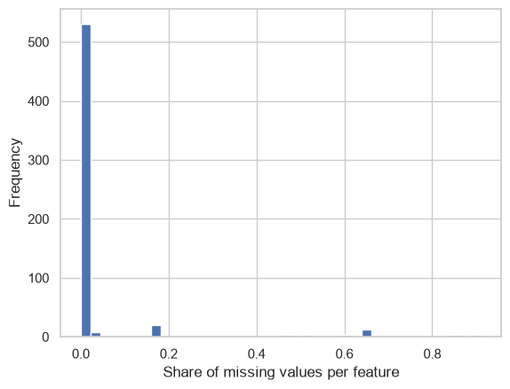
The label is a categorical – more precisely, a binary – variable. As explained in Section 2.2, it is described by the frequencies of its two categories:
label = y.map({-1: "pass", 1: "fail"}) # readable category names instead of codes
counts = label.value_counts() # frequency of each category
print(counts.to_string())
print(f"Share of failed runs: {counts['fail'] / counts.sum():.1%}")
fig, ax = plt.subplots(figsize=(4, 3)) # a small figure of its own
counts.plot.bar(ax=ax, rot=0, ylabel="number of runs") # bar chart; rot=0: horizontal labels
plt.show()class
pass 1463
fail 104
Share of failed runs: 6.6%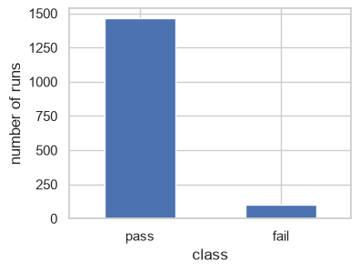
Only about one run in fifteen failed. For the decision, this share matters more than the number of sensors: a model can only learn what a failure looks like from the failed runs, and rare events are hard to learn from (Chapter 7).
Code
# Is the missingness itself related to the outcome?
miss_rate = X.isna().mean(axis=1) # axis=1: share of missing values per run (row)
print(miss_rate.groupby(y).describe().round(3)) # compare passed (-1) and failed (1) runs
# Constant features carry no information
n_constant = (X.nunique(dropna=True) <= 1).sum() # at most one different value (gaps ignored)
print("Constant features:", n_constant) count mean std min 25% 50% 75% max
class
-1 1463.0 0.046 0.023 0.007 0.034 0.041 0.054 0.258
1 104.0 0.043 0.017 0.014 0.034 0.041 0.047 0.108
Constant features: 116Discussion. Most features are complete or nearly complete, but a group of features has a large share of missing values – often entire sensors that were only recorded for part of the runs. In addition, a considerable number of features are constant and can be removed without loss. Comparing the share of missing values between passed and failed runs is a quick check of whether missingness could be informative: if the shares differ, the gaps are not MCAR. Here they are similar – no sign that the gaps carry information about the outcome, although this does not prove MCAR.
2.6 Back to the decision
In CRISP-DM terms, this is the step back from phase 2 to phase 1: what we learned about the data decides whether and how the project continues. For a go/no-go recommendation, three questions matter: Are enough features usable? Are there enough examples of the event we want to predict? And are the gaps understood? We fix simple, transparent criteria before looking at the result: at least half of the features should be usable, and there should be at least 50 failed runs to learn from. A feature counts as usable if the middle half of its values is not identical – its IQR is larger than zero (Section 2.2) – and if at most 20 % of its values are missing. These thresholds are not general rules but a judgement for this question; another project may need others. What matters is to state them openly and to check whether the decision depends on them.
Before applying these criteria, one more check that uses the time stamps of the runs: is the failure rate stable over the recording period?
# The time stamps come in two formats: "19/07/2008 11:55:00" and, later, "1/8/2008 2:02"
# (no leading zeros, no seconds) - both with the day first. No single format fits both, so
# format="mixed" reads each time stamp on its own; dayfirst=True fixes the order of day and month.
time = pd.to_datetime(secom["timestamp"], format="mixed", dayfirst=True)
print("Period:", time.min(), "to", time.max()) # check: plausible range?
runs = pd.DataFrame({"time": time, "fail": y == 1}).set_index("time") # one row per run
weekly = runs["fail"].resample("W").agg(["mean", "count"]) # failure rate and runs per week
print(weekly.round(3).to_string())
ax = weekly["mean"].plot(marker="o", ylabel="Share of failed runs per week")
plt.show()Period: 2008-07-19 11:55:00 to 2008-10-17 06:07:00
mean count
time
2008-07-20 0.231 13
2008-07-27 0.095 21
2008-08-03 0.208 48
2008-08-10 0.130 108
2008-08-17 0.137 51
2008-08-24 0.106 208
2008-08-31 0.041 169
2008-09-07 0.015 133
2008-09-14 0.042 95
2008-09-21 0.032 154
2008-09-28 0.024 166
2008-10-05 0.089 169
2008-10-12 0.058 138
2008-10-19 0.011 94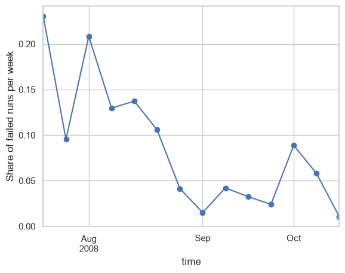
The failure rate is not stable: in July and August, 10–20 % of the runs failed, from September on mostly only 1–4 %. The process has obviously changed during the recording – perhaps it was improved. A model could therefore learn when failures happened instead of why, and it must be tested on runs that are later than those it was trained on (Chapter 11). Note also the number of runs per week: the first two weeks contain only 13 and 21 runs, so their rates are uncertain.
All findings of this chapter, sorted by the four tasks of CRISP-DM phase 2:
| Task | Finding | Consequence |
|---|---|---|
| Collect | metadata incomplete: label column not documented, sensor names anonymised; time stamps in two formats | clarify meaning and units of the sensors with the fab |
| Describe | 104 failed runs (6.6 %) | few examples of the event: keep models simple, evaluate carefully (Chapter 7) |
| Explore | failure rate falls from 10–20 % (July, August) to 1–4 % (from September) | ask the fab what changed; train on earlier, test on later runs (Chapter 11) |
| Verify quality | 116 constant and further nearly constant features, 28 with more than 50 % gaps; similar share of gaps in passed and failed runs | remove these features; clarify the cause of the gaps with the process engineers |
Outliers are deliberately not part of this check. With 590 anonymised sensors, nobody can say whether an extreme value is a measurement error or a real process state (Section 2.4), and an automatic rule would flag many values that no one can judge. This becomes possible only once the sensors have names and units – one more reason for the first consequence.
The two criteria from above, in code:
# A feature is usable if its IQR is larger than zero and at most 20 % of its values are missing.
iqr = X.quantile(0.75) - X.quantile(0.25) # interquartile range of every feature
usable = (iqr > 0) & (X.isna().mean() <= 0.2)
n_fail = int((y == 1).sum()) # number of failed runs
print(f"Usable features: {usable.sum()} of {X.shape[1]} ({usable.mean():.0%})")
print(f"Failed runs: {n_fail} of {len(y)} ({n_fail / len(y):.1%})")
if usable.mean() >= 0.5 and n_fail >= 50: # the two criteria from the text
print("Decision: GO – with a data-quality work package in the first project phase.")
else:
print("Decision: NO-GO for now – improve data acquisition first.")Usable features: 432 of 590 (73%)
Failed runs: 104 of 1567 (6.6%)
Decision: GO – with a data-quality work package in the first project phase.The result hardly depends on the thresholds: with more lenient criteria (not constant, at most 50 % missing – Exercise 6), 446 features would count as usable instead of 432. Whatever the code prints, the recommendation should name the conditions: the sensor names are anonymised, so no process engineer can yet judge which signals are physically relevant; the missing values must be explained (are they MAR or MNAR?); the drop of the failure rate in September must be explained; and roughly one hundred failures is a small number for a problem with hundreds of candidate features. Whether the usable features are also informative about failures is a different question: it belongs to the modelling phase and needs careful validation (Chapters 6 and 9). With 590 features and only 104 failures, some features will look informative by pure chance. Chapter 9 will show how hard the prediction actually is. These conditions are at the same time the tasks for the next round of the CRISP-DM cycle: with better-understood data, phases 2 and 3 are passed through again.
EDA toolbox
The functions used most in this chapter – all of them, with examples, in the Python quick reference (Appendix A):
- overview:
df.info(),df.describe(),df.head(),df.nunique() - missing values:
df.isna().sum(),df.fillna(...) - time stamps:
pd.to_datetime(..., format=...),df.set_index(...),s.resample(...),s.rolling(...) - groups and summaries:
df.groupby(...).mean(),s.median(),s.quantile(...) - masks and selection:
df[m],&,|,~ - plots:
sns.histplot,sns.boxplot,sns.heatmap
2.7 Summary
Key takeaways
- Read raw files deliberately: separator, missing value code, time format, units and time zone are documented in the metadata.
- Describe distributions by location, spread and shape; compare classical (mean, s) and robust (median, IQR, MAD) statistics.
- Know your data before you model them: check data quality systematically – missing values, gaps in time, implausible values, frozen sensors, outliers.
- Outlier rules flag candidates – domain knowledge decides whether they are errors or important events.
- The treatment of missing data depends on the mechanism (MCAR, MAR, MNAR) – and whether gaps are MAR or MNAR depends on what else is measured.
2.8 Exercises
Reading a raw weather file. The German Weather Service (DWD) publishes hourly air temperatures as raw files: a zip archive with metadata files and a semicolon-separated data file whose name starts with
produkt. Missing values are coded as-999, and the time stamps are integers such as2025041113(year, month, day, hour) in UTC. Load the data of station Trier-Petrisberg fromhttps://opendata.dwd.de/climate_environment/CDC/observations_germany/climate/hourly/air_temperature/recent/stundenwerte_TU_05100_akt.zip.Read the data file with the correct separator and missing value code, convert the time stamps and count the missing values.
Determine type and role (Chapter 1) of each column of the raw file for the question “How does the air temperature in Trier vary over the day?”.
Compute the mean temperature per hour of the day. At which hour is it warmest – and does the result change if you convert the time stamps from UTC to German local time?
Useful:
pd.read_csv(f, sep=";", na_values=[-999]),pd.to_datetime(s.astype(str), format="%Y%m%d%H"),df.tz_localize("UTC").tz_convert("Europe/Berlin"). To use a station near your home town, look it up in the station list.Resample the energy data to hourly values. Which aggregation (mean, sum, max, last) is correct for
Appliances, which for the temperatures? Explain. Useful:df.resample("h").agg({column: summary, ...})applies one summary per column.Show that the random columns
rv1andrv2carry no information aboutAppliances. Compare their correlation with that of the outdoor temperature. Useful:df[cols].corrwith(s)correlates several columns with one series.Compare the IQR rule and the robust z-score for
Appliancesafter a log transformation,np.log(energy["Appliances"]). How many values are flagged now? What does this tell you about the “outliers” in the original scale? Useful: the functionsiqr_outliersandrobust_z_outliersfrom the live coding.How missing values bias a mean. Simulate the hardening furnace of Section 2.5: 10,000 readings, the load uniformly distributed between 0 and 1, the temperature \(820 + 80 \cdot \text{load}\) °C plus normally distributed noise with a standard deviation of 15 K. Delete values according to the three mechanisms – MCAR: 10 % at random; MAR: with probability \(0.8\,(1 - \text{load})\); MNAR: all values above 900 °C – and compare mean and standard deviation with the truth after three treatments: dropping the gaps, filling them with the median of the remaining values, and filling them from the load with a straight line fitted on the complete rows. Which treatment works for which mechanism? Useful:
rng = np.random.default_rng(0),rng.uniform(0, 1, n),rng.normal(0, 15, n),np.where(m, a, b),np.polyfit(x, y, deg=1).(Extension) For SECOM: propose a strategy for features with 0–5 %, 5–50 % and more than 50 % missing values. Then implement a simple preparation: remove constant features, remove features with more than 50 % missing values and impute the remaining gaps with the median. How many features remain? Useful:
X.loc[:, m]keeps the columns where the maskmisTrue;X.fillna(X.median()).
2.8.1 Solutions
Solution to Exercise 1
- A small helper function downloads the archive on the first run and keeps a copy in the folder
data; every later run reads this copy. The data file is the one whose name starts withprodukt:
from pathlib import Path
import requests
DATA = Path("data")
DATA.mkdir(exist_ok=True) # create the folder ./data if it does not exist
def download(url, fname=None):
"""Download a file once and cache it in ./data."""
if fname is None: # no file name given:
fname = url.split("/")[-1] # use the last part of the URL
path = DATA / fname # "/" joins folder and file name
if not path.exists(): # download only if not cached yet
r = requests.get(url, timeout=120) # give up after 120 s without response
r.raise_for_status() # stop with an error if the download failed
path.write_bytes(r.content) # open, write and close the file in one step
return pathimport zipfile
# The URL is long; we build it from three parts with "+":
server = "https://opendata.dwd.de/climate_environment/CDC/observations_germany/"
product = "climate/hourly/air_temperature/recent/" # hourly air temperature, recent data
fname = "stundenwerte_TU_05100_akt.zip" # 05100 = station ID of Trier-Petrisberg
url = server + product + fname
with zipfile.ZipFile(download(url)) as z: # open the archive (closed after the block)
print(z.namelist()) # what is inside?
# The data file is the one whose name starts with "produkt". Its full name contains
# the dates of the measurement period and changes daily, so we search for it:
for n in z.namelist():
if n.startswith("produkt"):
name = n
break # found: stop searching
dwd = pd.read_csv(z.open(name), # read the file directly from the archive
sep=";", # columns are separated by semicolons
na_values=[-999], # replace the code -999 by NaN ("missing")
skipinitialspace=True) # ignore blanks after each separator
dwd.columns = dwd.columns.str.strip() # remove blanks around the column names
dwd.head()['Metadaten_Stationsname_Betreibername_05100.html', 'Metadaten_Stationsname_Betreibername_05100.txt', 'Metadaten_Parameter_tu_stunde_05100.html', 'Metadaten_Parameter_tu_stunde_05100.txt', 'Metadaten_Geraete_Lufttemperatur_05100.html', 'Metadaten_Geraete_Lufttemperatur_05100.txt', 'Metadaten_Geraete_Rel_Feuchte_05100.html', 'Metadaten_Geraete_Rel_Feuchte_05100.txt', 'Metadaten_Geographie_05100.txt', 'Metadaten_Fehldaten_05100_20250411_20261012.html', 'Metadaten_Fehldaten_05100_20250411_20261012.txt', 'Metadaten_Fehlwerte_05100_20250411_20261012.txt', 'produkt_tu_stunde_20250411_20261012_05100.txt']| STATIONS_ID | MESS_DATUM | QN_9 | TT_TU | RF_TU | eor | |
|---|---|---|---|---|---|---|
| 0 | 5100 | 2025041100 | 3 | 4.9 | 83.0 | eor |
| 1 | 5100 | 2025041101 | 3 | 4.5 | 85.0 | eor |
| 2 | 5100 | 2025041102 | 3 | 3.6 | 88.0 | eor |
| 3 | 5100 | 2025041103 | 3 | 2.8 | 91.0 | eor |
| 4 | 5100 | 2025041104 | 3 | 1.8 | 92.0 | eor |
# MESS_DATUM is an integer such as 2025041113 (year, month, day, hour):
# convert it to text and parse it with the matching format into a real time stamp.
# Format codes: %Y = year (4 digits); %m = month, %d = day, %H = hour (2 digits each).
dwd["time"] = pd.to_datetime(dwd["MESS_DATUM"].astype(str), format="%Y%m%d%H")
weather = dwd.set_index("time") # time as row index
weather = weather[["TT_TU", "RF_TU"]] # keep only two columns
weather = weather.rename(columns={"TT_TU": "temp_C", # new names with units
"RF_TU": "rel_humidity_pct"})
print(weather.isna().sum()) # number of missing values per column
weather.tail() # last five rowstemp_C 19
rel_humidity_pct 19
dtype: int64| temp_C | rel_humidity_pct | |
|---|---|---|
| time | ||
| 2026-10-12 19:00:00 | 12.3 | 71.0 |
| 2026-10-12 20:00:00 | 11.4 | 74.0 |
| 2026-10-12 21:00:00 | 10.9 | 76.0 |
| 2026-10-12 22:00:00 | 9.9 | 82.0 |
| 2026-10-12 23:00:00 | 9.8 | 78.0 |
The raw table has cryptic column names (TT_TU = air temperature in °C, RF_TU = relative humidity in %, QN_9 = quality level). STATIONS_ID and QN_9 are stored as numbers but are codes, i.e. categorical variables (Chapter 1). The second cell turns MESS_DATUM into real time stamps, uses them as the index and gives the columns meaningful names (format codes such as %Y: Appendix A).
The output reports a few missing hours – the former -999 codes, now NaN. The metadata file Metadaten_Fehldaten_… in the archive lists every gap with its start, end and number of missing hours. This is useful in two ways. First, it is a check: if our count of NaN agrees with the official count, we have read the file correctly. Second, it shows the structure of the gaps – at the time of writing, one isolated hour and one block of 18 consecutive hours. A single hour can be interpolated safely, a long block cannot (Section 2.5). What the file does not tell is why the values are missing: its column for a description is empty. To find out, one would have to ask the data provider.
STATIONS_ID: categorical (nominal) – a code, although stored as a number; constant within the file.MESS_DATUM: time stamp – numeric (differences are durations); after conversion, the index of the time series.QN_9: categorical – a code for the quality level of the record. Whether the levels are ordered must be looked up in the DWD documentation; computing a mean is meaningless either way.TT_TU: continuous (°C) – the variable of interest for this question; there is no target, because nothing is predicted.RF_TU: continuous (%) – not needed for this question.eor: not a variable at all – a marker for “end of record” in each line of the file.
- The DWD time stamps are in UTC (stated in the metadata file
Metadaten_Parameter_…). Declare this withtz_localize, then convert to German time:
# The DWD time stamps are in UTC: declare this (tz_localize), then convert to German time.
local = weather.tz_localize("UTC").tz_convert("Europe/Berlin")
cycle = pd.DataFrame({ # mean temperature per hour of day
"UTC": weather.groupby(weather.index.hour)["temp_C"].mean(),
"local time": local.groupby(local.index.hour)["temp_C"].mean(),
})
ax = cycle.plot(marker="o")
ax.set(xlabel="Hour of day", ylabel="Mean temperature (°C)")
plt.show()
cycle.idxmax() # hour of the maximum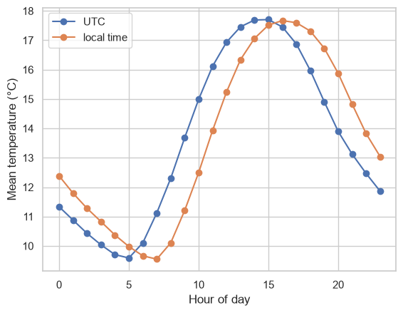
UTC 15
local time 16
dtype: int32The maximum typically occurs in the early or mid afternoon. In local time the curve is shifted by one hour in winter and two hours in summer, so the hour of the maximum changes accordingly. This is exactly the kind of shift that causes errors when weather data are merged with production data recorded in local time.
Another station: Open the station list in a browser or read it with pandas, find your station and replace 05100 in the file name. The file name of the recent product always has the form stundenwerte_TU_<ID>_akt.zip, where <ID> is the five-digit station ID with leading zeros. Not all stations measure all variables – if the file does not exist, choose a neighbouring station.
Solution to Exercise 2
# One aggregation per column: energies are summed, temperatures are averaged.
hourly = energy.resample("h").agg({"Appliances": "sum", "lights": "sum",
"T1": "mean", "T_out": "mean"})
hourly.head()| Appliances | lights | T1 | T_out | |
|---|---|---|---|---|
| date | ||||
| 2016-01-11 17:00:00 | 330 | 210 | 19.890000 | 6.308333 |
| 2016-01-11 18:00:00 | 1060 | 310 | 19.897778 | 5.941667 |
| 2016-01-11 19:00:00 | 1040 | 150 | 20.495556 | 6.000000 |
| 2016-01-11 20:00:00 | 750 | 210 | 20.961111 | 6.000000 |
| 2016-01-11 21:00:00 | 620 | 140 | 21.311667 | 5.833333 |
Appliances is an energy per interval (Wh in 10 minutes). The energy of one hour is the sum of the six 10-minute values (unit: Wh per hour, i.e. the mean power in W). Temperatures are state variables: the hourly value is the mean (or, for an instantaneous value, the last one). Summing temperatures would be physically meaningless. max is useful for questions about peaks, e.g. dimensioning a fuse.
Solution to Exercise 3
# Correlation of each listed column with the appliance energy use
energy[["rv1", "rv2", "T_out", "T2", "RH_out"]].corrwith(energy["Appliances"]).round(3)rv1 -0.011
rv2 -0.011
T_out 0.099
T2 0.120
RH_out -0.152
dtype: float64The correlations of rv1 and rv2 with Appliances are close to zero – and exactly equal, because the two columns are identical: energy["rv1"].equals(energy["rv2"]) gives True. A nice example of a redundant feature. The weather variables show small but non-zero correlations. Note that with almost 20,000 observations even tiny correlations can be “statistically significant” (Chapter 4) – the size of the correlation matters more than its p-value.
Solution to Exercise 4
log_app = np.log(energy["Appliances"]) # log transformation (all values are positive)
print(f"IQR rule: {iqr_outliers(log_app).mean():.1%}")
print(f"|robust z| > 3.5: {robust_z_outliers(log_app).mean():.1%}")IQR rule: 6.5%
|robust z| > 3.5: 7.4%After the log transformation, fewer values are flagged – 6.5 % instead of 10.8 % with the IQR rule – but still many, almost all of them on the high side: the usage peaks remain unusual even on the log scale. Part of the “outliers” on the original scale was simply the long right tail of a skewed distribution, the rest are real usage events. Outlier rules implicitly assume a roughly symmetric distribution – applying them to skewed data without transformation flags normal behaviour.
Solution to Exercise 5
# --- 1. Simulate the "true" furnace data ------------------------------------------
# A random number generator with a fixed start value (seed = 0): every run produces
# the same random numbers, so the results in the script are reproducible.
rng = np.random.default_rng(0)
n = 10_000 # number of readings (_ only for readability)
load = rng.uniform(0, 1, n) # load between 0 (empty) and 1 (full); always recorded
noise = rng.normal(0, 15, n) # random scatter, standard deviation 15 K
temp = 820 + 80 * load + noise # true temperature: 820 °C empty, 900 °C full
# --- 2. Delete values according to the three mechanisms ---------------------------
# Each mask is an array of n truth values: True means "this reading is missing".
# rng.random(n) draws n numbers between 0 and 1; "< p" is True with probability p.
missing = {
"MCAR": rng.random(n) < 0.10, # random radio losses: always 10 %
"MAR": rng.random(n) < 0.8 * (1 - load), # energy-saving mode: 80 % if empty, 0 % if full
"MNAR": temp > 900, # saturation: missing because hot
}
# --- 3. Treat the gaps in three ways and compare with the truth --------------------
rows = []
for name, m in missing.items(): # name = mechanism, m = mask of missing values
obs = ~m # ~ negates the mask: True means "value observed"
# straight line temperature vs. load, fitted on the observed readings only
slope, intercept = np.polyfit(load[obs], temp[obs], deg=1)
# np.where(m, a, b): where a value is missing (m is True) take a, otherwise b
filled_median = np.where(m, np.median(temp[obs]), temp) # fill with the median
filled_line = np.where(m, intercept + slope * load, temp) # fill from the load
for treatment, values in [("drop gaps", temp[obs]),
("median", filled_median),
("regression", filled_line)]:
rows.append({"mechanism": name, "treatment": treatment,
"mean (°C)": values.mean(),
"std (K)": values.std(ddof=1)}) # ddof=1: divide by n - 1, as for s
print(f"Truth: mean {temp.mean():.1f} °C, standard deviation {temp.std(ddof=1):.1f} K")
print("Share missing:", ", ".join(f"{name} {m.mean():.0%}" for name, m in missing.items()))
pd.DataFrame(rows).round(1)Truth: mean 860.0 °C, standard deviation 27.5 K
Share missing: MCAR 10%, MAR 40%, MNAR 8%| mechanism | treatment | mean (°C) | std (K) | |
|---|---|---|---|---|
| 0 | MCAR | drop gaps | 860.0 | 27.5 |
| 1 | MCAR | median | 860.0 | 26.1 |
| 2 | MCAR | regression | 860.1 | 27.1 |
| 3 | MAR | drop gaps | 868.9 | 26.0 |
| 4 | MAR | median | 869.7 | 20.2 |
| 5 | MAR | regression | 860.0 | 26.0 |
| 6 | MNAR | drop gaps | 856.0 | 24.5 |
| 7 | MNAR | median | 856.1 | 23.6 |
| 8 | MNAR | regression | 858.3 | 25.0 |
Read the table treatment by treatment:
- Dropping the gaps keeps the mean unbiased only under MCAR. Under MAR it is too high, because the cooler low-load readings are under-represented; under MNAR it is too low, because the hottest readings are missing.
- Filling with the median of the remaining values looks like a repair, but it is none. It hardly changes the mean (filling with the mean would not change it at all), so the bias under MAR and MNAR remains completely. On top of that, the spread shrinks, because all gaps receive the same value: under MAR, the standard deviation drops from 27.5 K to 20.2 K. Every later analysis would consider the process more stable than it is.
- Regression imputation uses the load, which explains why values are missing. Under MAR, it repairs the mean completely and almost restores the spread. Under MNAR, it removes only part of the bias: the line was fitted on readings below 900 °C and cannot know what happens above the saturation limit.
Even regression imputation slightly underestimates the spread, because the filled-in values lie exactly on the line, without the scatter of real readings. A few degrees may not sound like much – but for a heat treatment with a tolerance of ±10 °C, they can decide whether a batch is released.
Solution to Exercise 6
# X.loc[:, mask]: all rows (":"), and only the columns where the mask is True
X1 = X.loc[:, X.nunique(dropna=True) > 1] # 1. drop constant features
X2 = X1.loc[:, X1.isna().mean() <= 0.5] # 2. drop > 50 % missing
X3 = X2.fillna(X2.median()) # 3. median imputation
print(f"{X.shape[1]} -> {X1.shape[1]} (constant removed) -> {X2.shape[1]} (sparse removed)")
print("Remaining missing values:", X3.isna().sum().sum())590 -> 474 (constant removed) -> 446 (sparse removed)
Remaining missing values: 0Strategy: 0–5 % missing → median imputation (little influence on results); 5–50 % → median or model-based imputation plus an indicator variable “was missing”; more than 50 % → remove the feature, unless domain experts know that it is important (then investigate why it is missing). In a real project the imputation would be fitted on the training data only (Chapter 6).